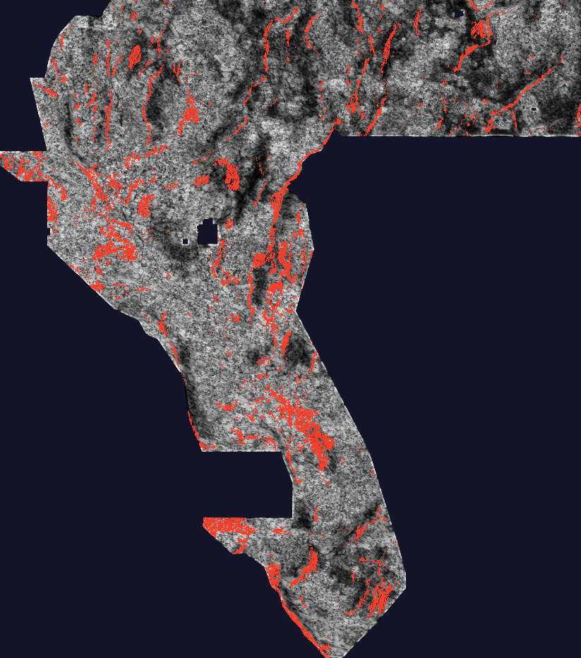

H82-RRD: RTP–TMI remanence / block-rotation discordance breaks
OK TO DOWNLOAD FOR INSPECTION: YES. OK TO SUBMIT: NO — NOT OK TO SUBMIT. This session generated one unique, newly computed GeoTIFF (not a copy of any previous submission). It is format-valid, but it failed the holdout gate (0.0686 HOLDOUT-DTI vs the 0.152718 incumbent) and its final dots fire the duplicate-overlap gate against 3 informative local rasters. Do not spend a weekly slot on it. Selector status: not approved. Weekly slots used by this lane: 0.
⬇ Download the H82 GeoTIFF (inspection only — DO NOT SUBMIT)
Download .tif (129 KB) Same file as one-TIFF .zip (93 KB) Format receipt (JSON)Submission name (for reference only — do not submit):
gems77-h82-rrd-discord-37654dots-20261021-c069b8d8-zerosNote-field text (112/140 chars, for reference only):
H82-RRD RTP-TMI remanence-discordance breaks; 37654 binary dots >200m off catalogue; holdout-gated, see run cardSHA-256 (.tif): 8f0726723898078d480668d887d7aebf9b9ca87b7892912ce1110ab92e164c2c · 131,841 bytes ·
single-band float32 · EPSG:32611 · 3730×3292 · values exactly {0.0, 1.0} · 0 NaN · nodata=None ·
37,654 dots · 0 on the mapped catalogue · nearest catalogue distance √5 px (≈224 m).
Local format PASS does not prove portal acceptance and does not authorize submission.
Run card: evidence/h82rrd_run_card.json ·
How submission would work after approval →
Why did the family best (h33-2-b2, 0.2778) score highest — and can H82 beat it?
Attribution warning (IR-82-01). The 0.2778 figure is OWNER-REPORT: GEMSDOE32's own site states for
this exact file “projected live DTI 0.2747 (a MODEL, not a score). NO ORGANISER SCORE EXISTS” and labels it
UNSCORED (verified by fetching the GEMSDOE32 site
on 2026-10-21; this session also hash-verified the champion bytes, SHA-256 c55bafc4…). The public
leaderboard #1 is 0.4413 ORGANIZER-CONFIRMED (fetched 2026-10-21).
The reported ordering is nevertheless exactly what the official metric predicts. H33 is one multi-physics ridge (H19-5, 121,131 px) progressively thinned: dotted at ≈300 m spacing, then stripped of dots ≤200 m from the mapped catalogue (37,654 dots). Because DTI credits each truth pixel with the max kernel value within 300 m, redundant neighbouring mass earns ~0 while paying full false-positive cost; thinning keeps the coverage and deletes the cost, and the collar strip deletes mass whose only nearby truth is the already-mapped catalogue. That is an emission optimum on a 0.19-class field — re-thinning cannot reach 0.4413; only a field that puts mass where hidden faults actually are can. H82 tested one such candidate field and it did not beat the holdout incumbent, so no claim is made that this file beats 0.2778. HOLDOUT-DTI is a local hide-and-recover number, never a leaderboard projection.
Hypotheses considered (ranked before experiments)
| Rank | Hypothesis · layers | Signature | Why off-catalogue | Status |
|---|---|---|---|---|
| 1 | H82-1 RRD · TMI(14), RTP(2), mag_anom(1) | Local RTP≈a·TMI+b regression breaks: |∇r|, |∇a|, residual ridges | Remanence/rotation block boundaries persist under alluvium with weak amplitude contrast | Tested — negative |
| 2 | Gravity+basement flexure · bands 13/15/19 | Sign-consistent Laplacian zero-crossings on low-relief floors | Blind basin hinges | Not run (budget) |
| 3 | Seismicity lineaments · bands 10/16 | Structure-tensor coherence of epicentre density | Swarming blind faults | Not run |
| 4 | Basement zero-hinge · bands 15/12 | Depth≈0 contour continuations | Buried range fronts | Not run |
| 5 | Volcanic-vent alignments · GDR 1391 vents | Collinear vent Hough lines | Fissure-controlled vents | Too sparse — not viable as primary |
Full register with mimics and novelty checks: research/h82rrd_hypotheses.md ·
preregistration: registry/preregistration_h82rrd.json (frozen before Exp 1). Named non-fault mimic for
H82-1: unfaulted reversely-magnetized volcanic flow margins; GeoDAWN survey-block seams.
Results — all numbers HOLDOUT-DTI (gems57-pooled-hide-v2, seed 20, 11,321 withheld positives)
| Arm (37,654-dot budget, >2 px exclusion, no tuning scan) | HOLDOUT-DTI | 95% CI |
|---|---|---|
| A_std19_rrd — HGB(19 raw + 8 RRD) (preregistered winner → TIF) | 0.0686 | [0.0541, 0.0842] |
| A_std19 — HGB(19 raw bands) control | 0.0618 | [0.0474, 0.0772] |
| A_rrd — HGB(8 RRD channels only) | 0.0490 | [0.0393, 0.0583] |
| A0_random control | 0.0471 | [0.0414, 0.0530] |
| S_rrd — pure discordance physics surface | 0.0419 | [0.0339, 0.0499] |
| Repo incumbent (H77-Step, same instrument) | 0.152718 | [0.131548, 0.175185] |
Paired lift of the RRD block over the std19 control: +0.0068, 95% CI [−0.0036, +0.0163] — includes 0, not significant. Leakage canaries: worst single-feature symmetric AUC 0.5334 ≤ 0.90 (pass; no leakage, weak individual signal). Phase-1 surface uniqueness (sampled Spearman, 37 local-scope rasters): max |ρ| = 0.047 ≤ 0.90 (pass). Phase-2 final-dot overlap: 0.786 vs contactphys, 0.737 vs XSEN, 0.713 vs H80-OTA (3 informative firings > 0.70 — duplicate stop); vs the H33 champion only 0.321 (pixel-distinct from the family best, byte-novel in scope). Scope is local downloads/submissions + H33, not the complete family registry. Verdict: negative.

S_rrd physics surface (grey) and final A_std19_rrd dots (red), ×4 block-mean. Diagnostic only.
How to submit — only after a future selector approval (not this file)
- Confirm a future file's row on the Start-here page says OK TO SUBMIT for its exact SHA-256 (none does today).
- Download that approved
.tif(or its one-TIFF.zip); verifysha256summatches its run card. Values must already be in [0, 1] — see the portal-error note on the executive summary. - Sign in to DrivenData #306 → New submission → choose the file under File to submit, paste the file's ≤140-character text into Note (optional), submit, and archive the organizer receipt. Only a receipt makes a score ORGANIZER-CONFIRMED. This sandbox cannot log in or upload for you.
Official sources (manual review)
| Claim | Source |
|---|---|
| Task, metric (α=0.2, β=0.8, R=300 m), GeoTIFF format | Problem page 967 |
| Public leaderboard #1 = 0.4413 | Leaderboard |
| GeoDAWN magnetic/radiometric surveys (DOI 10.5066/P93LGLVQ) | USGS GeoDAWN |
| INGENIOUS / GDR 1391 (CC BY 4.0) | GDR 1391 · INGENIOUS |
| Reference solution · rules PDF · EPSG:32611 · Tversky | GitHub · 96647.pdf · epsg.io/32611 · Wikipedia |
| H33 champion file & its UNSCORED status | GEMSDOE32 site |
Limitations & next steps
- Catalogue hide-and-recover rewards catalogue-style faults; a discordance field aimed at unlike-catalogue block boundaries is penalized by construction. H82 is falsified as a standalone detector on this instrument, not proven geologically empty live — but protocol forbids spending a slot without a holdout win.
- No catalogue-distance/mechanics features were allowed in this lane; incumbent-class scores (0.15+) in this repo all use them plus lidar/external stacks. A future test of RRD as a small additive block on the full 54–96-channel stack would need a new preregistration and a fresh duplicate check (HGB surfaces converge: Phase-2 fired at 0.786).
- Uniqueness scope is local (37 rasters + H33), not the full 812-raster family registry; a complete scan remains outstanding infrastructure work.
- Data limits: DrivenData files are login-walled (SHA-pinned owner mirrors used; integrity-pinned, not organizer-authenticated); Dropbox mirrors unreachable from the sandbox; no GPU (2 vCPU / 3.8 GB) — HGB-on-CPU only.
Evidence: evidence/h82rrd_e1_canary_surface.json · evidence/h82rrd_e2_holdout.json ·
evidence/h82rrd_e3_build.json · evidence/h82rrd_run_card.json. Code: src/gems82rrd/fields.py,
scripts/h82rrd_pipeline.py. Core values: Maximize P(Win) — publish the negative, spend no slot; Own the Outcome.